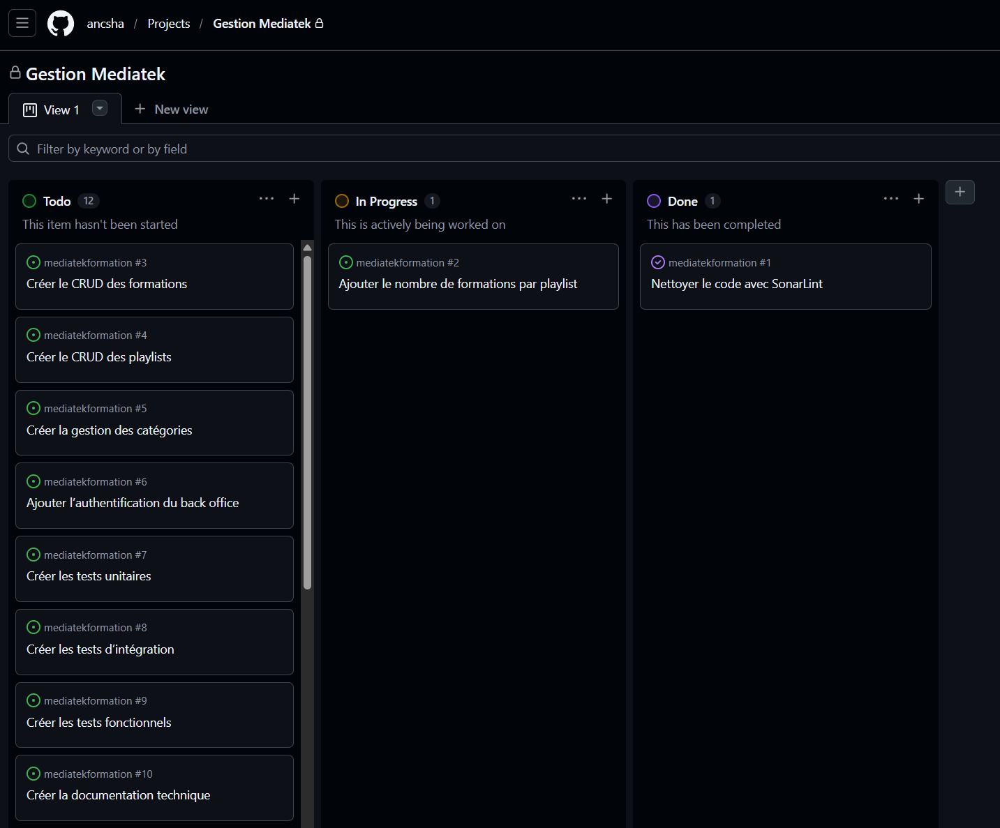
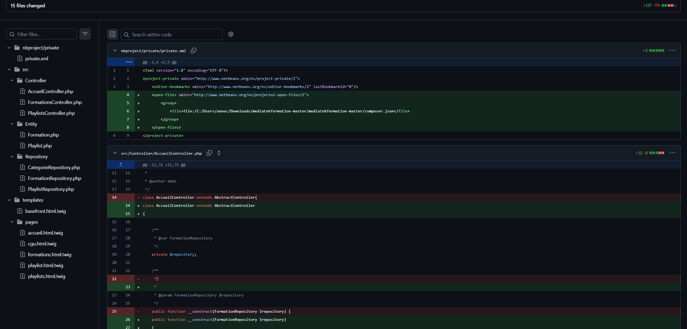
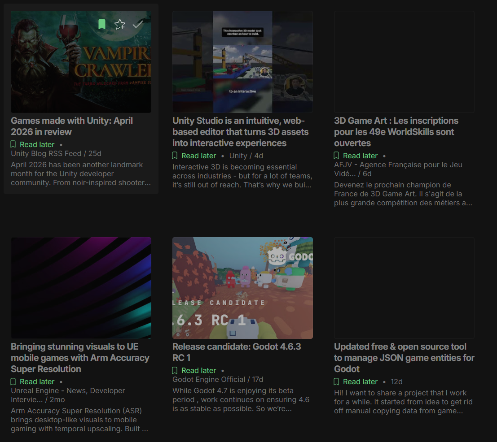
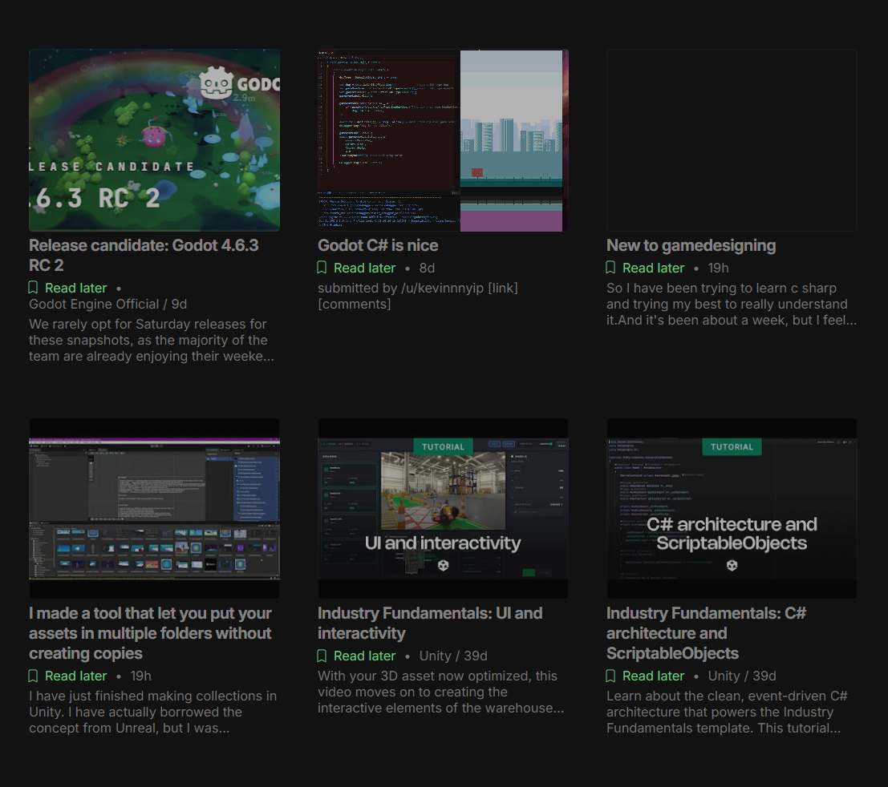

Portfolio · BTS SIO SLAM
Anne-Charlotte
Rivalland
Étudiante en BTS SIO SLAM passionnée par le développement web et logiciel.

Parcours et Certifications
De la recherche de stage à la construction de mon identité professionnelle.
Formation académique
— Baccalauréat obtenu en 2023 — Spécialités LLCER & Sciences Économiques et Sociales avec le CNED.

— Certification PIX obtenue en 2026.

BTS SIO SLAM
Formation Bac + 2 en développement logiciel et applications métiers — couvrant le web, les bases de données, la cybersécurité et la gestion de projet.

Formation en autonomie : en cours
Utilisation de la plateforme OpenClassrooms pour approfondir mes compétences en dehors des cours du CNED. Apprentissage autonome en complément de la formation BTS SIO. (Toujours en formation)

Compétences
Compétences acquises lors de la formation.
Développement Web
HTML, CSS, JavaScript — initiation au développement front-end, création de pages statiques et dynamiques.
Python
Entrainement en algorithmique avec le language, découverte des bases du développement, scripts d'automatisation sur PyCharm.
Bases de données
SQL requêtes basiques, jointures, MySQL, SQL Server, compréhension de leur emplacement / fonctionnement.
Réseaux & Infrastructure
Notions de virtualisation sur Oracle Virtual Box, protocoles TCP/IP, configuration réseau de base.
Cybersécurité
Sensibilisation aux menaces, bonnes pratiques, politique de mots de passe, RGPD.
Gestion de projet
Interprétation et rédaction de cahiers des charges, diagrammes de cas d'utilisation, d'activités etc..
Java / POO avancée
Programmation orientée objet avancée, design patterns, développement d'un mini jeu vidéo.
PHP & Symfony
Développement back-end, création d'applications web dynamiques, framework MVC.
Développement mobile
Initiation au développement d'applications mobiles — Utilisation d'Android Studio.
Tests & Débogage
Utilisation d'outils de débogage, recherche d'erreurs, tests de fonctionnalités et validation du bon fonctionnement des applications.
Git & Versioning
Gestion de versions avec Git, travail collaboratif sur GitHub, branches, Push / Pull / Merge.
Veille technologique
Recherche de nouvelles technologies, découverte d'outils et suivi des évolutions du développement informatique.
Expériences Professionnelles
Ateliers de Professionnalisation et stages réalisés dans le cadre du BTS SIO.
Atelier n°1
✴︎ Application web (Symfony) exploitant une base de données relationnelle MySQL et qui met à disposition des vidéos d'auto-formation en ligne proposées par MediaTek86.
Missions réalisées :
- Mission 1 - Nettoyer et optimiser le code existant
- Mission 2 - Coder la partie back-office
- Mission 3 - Tester et documenter
- Mission 4 - Déployer le site et gérer le déploiement continu


★ Exemple de commit : création d'une page listant les responsables de l'entreprise pour l'Intranet, accessible uniquement à certains rôles.

★ Exemple de ticket qu'on m'a confié à traiter (création de la page).

Atelier n°2
✴︎ Découverte d'un outil de sécurité : AppScan, utilisé pour trouver les failles de sécurité présentes dans le code.
Missions réalisées :
- Correction de bugs
- Traitement de tickets
- Sécurisation du code


★ Site pour garder des traces des pages modifiées / numéros de chaque commit et modifications.

★ Exemple d'ajout d'une condition dans le code afin de vérifier que les deux champs obligatoires ont été cochés.

Stage de 1e année
✴︎ Développement sur une base de tests, programmation dans l'IDE VS Code, utilisation de Tortoise SVN comme dépot distant, utilisation du site 'EasyDesk' pour la gestion des tickets et le travail en équipe.
Missions réalisées :
- Développement Web en PHP, HTML, CSS, JS
- Refonte de l'intranet selon la nouvelle charte graphique
- Réalisation de tests fonctionnels et remontée d'anomalies


Stage de 2e année
✴︎ Découverte d'un outil de sécurité : AppScan, utilisé pour trouver les failles de sécurité présentes dans le code.
Missions réalisées :
- Correction de bugs
- Traitement de tickets
- Sécurisation du code
Veille Technologique
Thème choisi : L'évolution des moteurs de jeux vidéo
Comment les moteurs de jeux vidéo évoluent-ils avec les nouvelles technologies ?
Un moteur de jeu est un ensemble d'outils intégrés (rendu graphique, physique, gestion audio, scripts, animations, IA) qui permettent de créer un jeu sans tout coder de zéro. Unity et Unreal Engine sont aujourd'hui les deux moteurs les plus utilisés dans l'industrie vidéoludique mondiale.
Les moteurs de jeu ne se limitent plus aux jeux vidéo : ils sont désormais utilisés dans le cinéma (effets spéciaux, décors virtuels), l'architecture, la formation professionnelle et la simulation. Comprendre leur évolution, c'est comprendre une technologie qui touche de nombreux secteurs de l'informatique.
Les deux acteurs principaux
Unity (créé en 2005) est le moteur le plus populaire sur Steam avec près de 50% des jeux en 2025. Il est apprécié pour sa simplicité, son langage C# accessible et sa compatibilité multiplateforme (mobile, PC, console). Il est particulièrement adapté aux projets indépendants et aux petites équipes.
Unreal Engine (créé en 1994) est privilégié pour les productions AAA grâce à ses capacités graphiques exceptionnelles. Sa version 5, sortie officiellement en 2022, a introduit deux technologies révolutionnaires : Nanite (géométrie virtualisée, fin du budget polygones) et Lumen (éclairage global en temps réel).

La "Runtime Fee" d'Unity secoue les développeurs
En septembre 2023, Unity annonce des frais par installation de jeu. La réaction est massive : le PDG est limogé, et l'entreprise finit par annuler complètement la mesure en 2024, mais la confiance est brisée.
Lire l'article →Godot, l'outsider open source qui monte
Godot passe de moins de 1% à plus de 7% de parts de marché sur Steam en 5 ans. En 2025, 1 229 jeux sortis sur Steam l'utilisent, contre seulement 318 en 2023. Sa licence totalement gratuite (MIT) attire les développeurs indépendants.
Lire l'article →L'utilisation de l'IA dans les moteurs
Les deux moteurs intègrent désormais des workflows IA pour générer de l'art, des animations et des gameplays dynamiques. L'intelligence artificielle devient un outil de création à part entière pour les développeurs.
Lire l'article →
Nouvelle version d'Unreal Engine
Après des années de spéculations, de teasing et de discussions au sein de l'industrie concernant l'avenir de la technologie Unreal, Epic Games a officiellement dévoilé Unreal Engine 6. Plus tôt ce mois-ci, la préversion d'Unreal Engine 5.8 a été lancée.
Lire l'article →
Projets Futurs
Après le BTS SIO — ce qui m'attend et ce vers quoi je me dirige.
École 42 — Paris
Comment j'ai découvert l'École 42
✧ Je me suis renseignée sur la formation puis auprès d'un ami de mon grand-frère qui a lui même poursuivi ses études avec 42 après avoir fait un BTS SIO.
Ce qui m'attire chez cette école
✧ La pédagogie par la pratique, la réputation dans l'industrie tech, l'intensité du cursus, les débouchés qu'elle propose, son côté ouvert à tous.
La Piscine — L'épreuve d'entrée
✧ Le processus de sélection de l'École 42 passe par la Piscine, une période intensive d'un mois où les candidats apprennent à coder en C et en Shell.
Ma préparation afin de réussir mon entrée à 42
✧ Grâce à mon parcours actuel (BTS SIO, OpenClassrooms, Stages..) je me sens prête à plonger dans la piscine dès la prochaine rentrée.
Fondation
2013
Durée du cursus
3 à 5 ans
Frais de scolarité
Gratuit
Pédagogie
Peer-to-peer

Me Contacter
Une question, une opportunité ? Écrivez-moi directement.